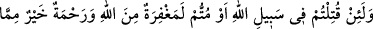
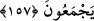
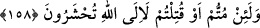

şekildedir: Ölen, ya da öldürülenlerin, kendilerinin bunları yolculuğa veya savaşa
çıkmaktan menetmedeki kusurlarından dolayı öldüğünü, yahut öldürüldüğünü
sanmaktadırlar. Böyle bir inanca sahip olanların pişmanlığı, ah-u figânı şüphesiz çok
daha şiddetli olacaktır. Ölüm ve hayatın, ancak Allah’ın kazâ ve takdîri ile olduğuna
inanan müslümanların kalbinde ise, böyle bir pişmanlık hissi uyanmaz.
“Yaşatan da, öldüren de Allah’dır.” Bu ifade, münâfıkların bâtıl sözlerini reddetmek
olup “mukîm olmanın ya da yolculuğa çıkmanın, hiçbir tesiri olmaksızın ölümde ve
hayatta tek müessir O’dur.” demektir. Çünkü Cenâb-ı Mevlâ, türlü türlü tehlikelerle
karşılaşmalarına rağmen, gaziyi ve yolcuyu hayatta bırakır. Ama her türlü tertibatı alıp
planını yapan mukîm ve savaş kaçkınlarını da öldürebilir.
Nice acele giden at yarı yolda kalır.
Ama topal eşek varacağı yere varır.
Nice sağlıklı kimseyi toprağa
Defnederler de yaralı ve hastalar diri kalır.
“Allah yaptıklarınızı görmektedir.” Dolayısıyle bu münâfıklar gibi olmayın.
157. Eğer Allah yolunda öldürülür ya da ölürseniz, şunu bilin ki, Allah’ın
mağfireti ve rahmeti onların topladıkları bütün şeylerden daha hayırlıdır.
“Yolculuk ve savaş kesinlikle ölüme götüren ve eceli öne alan şeylerden değildir.”
Eğer bu, Allah’ın emri ile olmuş ise; Allah katından buna mukabil gelen mağfiret ve
rahmetten bir parça, onların, yani kâfirlerin bütün hayatları boyunca topladıkları dünya
menfaatlerinden ve nimetlerinden daha hayırlıdır.
Denilirse ki: “Kâfirlerin topladıklarında zâten hiçbir hayır yoktur ki, mağfireti,
onların topladıklarından daha hayırlı olmakla vasfetmek mümkün olsun?”
Şöyle deriz: Kâfirlerin dünyada topladıkları şeyler bazen hayır sayılan helâl
nev’inden olabilir. Ayrıca bu âyet, topladıkları malların hayır olduğunu söyleyip
inandıkları için bu şekilde vârid olmuş ve şöyle denmiştir: Mağfiret, hayır sandığınız bu
şeylerden çok daha hayırlıdır.
158. Andolsun, ölseniz de öldürülseniz de Allah’ın huzûrunda toplanacaksınız.